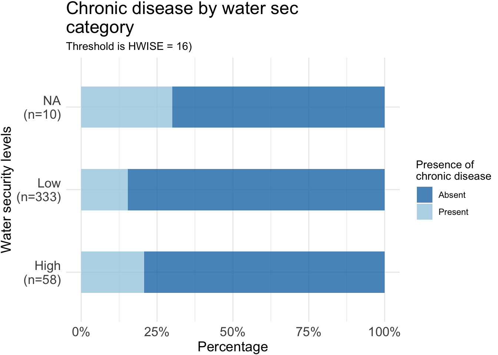

UROP_Brittany
2025-03-17
Last updated: 2025-03-17
Checks: 6 1
Knit directory: QUAIL-Mex/
This reproducible R Markdown analysis was created with workflowr (version 1.7.1). The Checks tab describes the reproducibility checks that were applied when the results were created. The Past versions tab lists the development history.
The R Markdown is untracked by Git. To know which version of the R
Markdown file created these results, you’ll want to first commit it to
the Git repo. If you’re still working on the analysis, you can ignore
this warning. When you’re finished, you can run
wflow_publish to commit the R Markdown file and build the
HTML.
Great job! The global environment was empty. Objects defined in the global environment can affect the analysis in your R Markdown file in unknown ways. For reproduciblity it’s best to always run the code in an empty environment.
The command set.seed(20241009) was run prior to running
the code in the R Markdown file. Setting a seed ensures that any results
that rely on randomness, e.g. subsampling or permutations, are
reproducible.
Great job! Recording the operating system, R version, and package versions is critical for reproducibility.
Nice! There were no cached chunks for this analysis, so you can be confident that you successfully produced the results during this run.
Great job! Using relative paths to the files within your workflowr project makes it easier to run your code on other machines.
Great! You are using Git for version control. Tracking code development and connecting the code version to the results is critical for reproducibility.
The results in this page were generated with repository version 06352eb. See the Past versions tab to see a history of the changes made to the R Markdown and HTML files.
Note that you need to be careful to ensure that all relevant files for
the analysis have been committed to Git prior to generating the results
(you can use wflow_publish or
wflow_git_commit). workflowr only checks the R Markdown
file, but you know if there are other scripts or data files that it
depends on. Below is the status of the Git repository when the results
were generated:
Ignored files:
Ignored: .DS_Store
Ignored: .RData
Ignored: .Rhistory
Ignored: .Rproj.user/
Ignored: analysis/.DS_Store
Ignored: analysis/.RData
Ignored: analysis/.Rhistory
Ignored: analysis/Hrs_by_HWISE score.png
Ignored: analysis/figure/
Ignored: analysis/odds_ratio_plot.png
Ignored: analysis/stacked_barplot.png
Ignored: code/.DS_Store
Ignored: data/.DS_Store
Untracked files:
Untracked: analysis/UROP_Brittany.Rmd
Unstaged changes:
Modified: analysis/MX28_plots.Rmd
Deleted: data/~$.Metadata-25-Feb-20.docx
Modified: stacked_barplot.png
Note that any generated files, e.g. HTML, png, CSS, etc., are not included in this status report because it is ok for generated content to have uncommitted changes.
There are no past versions. Publish this analysis with
wflow_publish() to start tracking its development.
R Markdown
# Load necessary libraries
library(dplyr)
Attaching package: 'dplyr'The following objects are masked from 'package:stats':
filter, lagThe following objects are masked from 'package:base':
intersect, setdiff, setequal, unionlibrary(ggplot2)
library(knitr)
library(rstatix)
Attaching package: 'rstatix'The following object is masked from 'package:stats':
filterlibrary(ggpubr)
library(coin)Loading required package: survival
Attaching package: 'coin'The following objects are masked from 'package:rstatix':
chisq_test, friedman_test, kruskal_test, sign_test, wilcox_testlibrary(tidyr)
library(MASS) # For stepAIC
Attaching package: 'MASS'The following object is masked from 'package:rstatix':
selectThe following object is masked from 'package:dplyr':
selectlibrary(broom) # For model output formatting
library(dplyr) # For data manipulation
library(car) # For VIF checkLoading required package: carData
Attaching package: 'car'The following object is masked from 'package:dplyr':
recodelibrary(corrplot)corrplot 0.95 loadedlibrary(rcompanion)
# loading data set
d <- read.csv("Cleaned_Dataset_Screening_HWISE_PSS_V2.csv")
# taking a quick look at first rows
head(d) ID D_YRBR D_LOC_TIME D_AGE D_HH_SIZE D_CHLD HLTH_SMK SES_SC_Total SEASON
1 1 1987 35 35 4 0 0 149 1
2 2 1990 32 32 12 2 1 196 1
3 3 1992 8 30 7 2 0 52 1
4 4 1982 32 40 4 1 0 214 1
5 5 1976 45 46 4 NA 0 117 1
6 6 1990 8 32 6 1 NA 220 1
W_WS_LOC HW_WORRY HW_INTERR HW_CLOTHES HW_PLANS HW_FOOD HW_HANDS HW_BODY
1 1 2 0 0 0 0 0 0
2 1 0 0 0 0 0 0 1
3 1 0 0 0 0 0 0 0
4 1 0 0 0 0 0 0 0
5 1 2 1 1 1 1 0 1
6 1 1 1 2 1 3 1 1
HW_DRINK HW_ANGRY HW_SLEEP HW_NONE HW_SHAME PSS1 PSS2 PSS3 PSS4 PSS5 PSS6
1 0 1 0 1 0 2 3 2 4 3 2
2 0 2 0 2 0 2 2 3 3 3 4
3 0 1 0 0 0 2 2 2 2 2 3
4 0 1 0 0 1 2 3 2 3 3 3
5 0 1 0 3 1 2 2 3 2 2 2
6 0 1 0 2 2 2 2 3 2 3 3
PSS7 PSS8 PSS9 PSS10 PSS11 PSS12 PSS13 PSS14 HLTH_CPAIN_CAT HLTH_CDIS_CAT
1 2 1 2 3 1 4 2 1 0 1
2 3 2 3 2 2 4 3 2 0 0
3 3 2 3 2 2 2 3 2 0 0
4 3 1 3 2 2 2 3 1 0 0
5 3 2 2 1 3 3 2 3 1 0
6 4 1 3 3 2 3 1 2 0 0
HW_TOTAL W_WC_WI HRS_WEEK
1 4 1 168
2 5 0 35
3 1 1 NA
4 2 1 28
5 12 1 156
6 15 1 12d$HLTH_CDIS_CAT <- as.factor(d$HLTH_CDIS_CAT) # HLTH_CDIS_CAT = chronic disease
# HW_TOTAL = Total HWISE score
# HRS_WEEK = Hours of water supply per week
# Create the stacked barplot
ggplot(d, aes(x = as.factor(HLTH_CDIS_CAT), y = HW_TOTAL)) +
geom_boxplot() +
labs(title = "Title",
x = "Chronic disease",
y = "HWISE score") +
theme_minimal()Warning: Removed 11 rows containing non-finite outside the scale range
(`stat_boxplot()`).# Count the number of data points per Water insecurity level (HWISE)
summary_stats <- d %>%
group_by(HLTH_CDIS_CAT) %>%
summarise(Count = n(), na.rm = TRUE)
hw.total <- d$HW_TOTAL
means <- aggregate(hw.total ~ HLTH_CDIS_CAT, d, mean)
means$hw.total <- round(means$hw.total, 2)
color_palette <- c("#ff7f00", "#a6cee3", "#1f78b4")
ggplot(d, aes(x = HLTH_CDIS_CAT,
y = HW_TOTAL,
fill = HLTH_CDIS_CAT)) +
geom_jitter(aes(color = HLTH_CDIS_CAT),
size = 1, width = 0.25) +
# Jitter adds individual data points
geom_violin(alpha = 0.6, width = 1.2) +
geom_boxplot(outlier.shape = 1, alpha = 0.5,
width = 0.1, color = "grey30") + # Boxplot
geom_text(data = means,
aes(label = hw.total, y = hw.total + 0.5, hjust=-0.7),
size = 5, color = "darkred") + #adds average labels
theme_minimal() +
labs(#title = "Hours water of supply by water Insecurity group\n(HWISE)",
x = "Presence/absence Chronic Disease",
y = "HWISE score") +
scale_fill_manual(values = color_palette) + # Custom colors for boxes
scale_color_manual(values = color_palette) + # Custom colors for points +
stat_summary(fun.y=mean, geom="point", shape=23,
size=5, color="darkred", fill="darkred") +
theme(legend.position = "none",
axis.text = element_text(size = 13),
axis.title = element_text(size = 14),
plot.title = element_text(size = 18)) +
scale_x_discrete(labels = paste0(summary_stats$HLTH_CDIS_CAT,
"\n(n=", summary_stats$Count, ")"))Warning: The `fun.y` argument of `stat_summary()` is deprecated as of ggplot2 3.3.0.
ℹ Please use the `fun` argument instead.
This warning is displayed once every 8 hours.
Call `lifecycle::last_lifecycle_warnings()` to see where this warning was
generated.Warning: Removed 11 rows containing non-finite outside the scale range
(`stat_ydensity()`).Warning: Removed 11 rows containing non-finite outside the scale range
(`stat_boxplot()`).Warning: Removed 11 rows containing non-finite outside the scale range
(`stat_summary()`).Warning: `position_dodge()` requires non-overlapping x intervals.Warning: Removed 11 rows containing missing values or values outside the scale range
(`geom_point()`).# Count the number of data points per Water insecurity level (HWISE)
summary_stats <- d %>%
group_by(HLTH_CDIS_CAT) %>%
summarise(Count = n(), na.rm = TRUE)
hw.total <- d$HRS_WEEK
means <- aggregate(hw.total ~ HLTH_CDIS_CAT, d, mean)
means$hw.total <- round(means$hw.total, 2)
ggplot(d, aes(x = HLTH_CDIS_CAT,
y = HRS_WEEK,
fill = HLTH_CDIS_CAT)) +
geom_jitter(aes(color = HLTH_CDIS_CAT),
size = 1, width = 0.25) +
# Jitter adds individual data points
geom_violin(alpha = 0.6, width = 1.2) +
geom_boxplot(outlier.shape = 1, alpha = 0.5,
width = 0.1, color = "grey30") + # Boxplot
geom_text(data = means,
aes(label = hw.total, y = hw.total + 0.5, hjust=-0.7),
size = 5, color = "darkred") + #adds average labels
theme_minimal() +
labs(#title = "Hours water of supply by water Insecurity group\n(HWISE)",
x = "Presence/absence Chronic Disease",
y = "Hours of water supply per week") +
scale_fill_manual(values = color_palette) + # Custom colors for boxes
scale_color_manual(values = color_palette) + # Custom colors for points +
stat_summary(fun.y=mean, geom="point", shape=23,
size=5, color="darkred", fill="darkred") +
theme(legend.position = "none",
axis.text = element_text(size = 13),
axis.title = element_text(size = 14),
plot.title = element_text(size = 18)) +
scale_x_discrete(labels = paste0(summary_stats$HLTH_CDIS_CAT,
"\n(n=", summary_stats$Count, ")")) Warning: Removed 39 rows containing non-finite outside the scale range
(`stat_ydensity()`).Warning: Removed 39 rows containing non-finite outside the scale range
(`stat_boxplot()`).Warning: Removed 39 rows containing non-finite outside the scale range
(`stat_summary()`).Warning: `position_dodge()` requires non-overlapping x intervals.Warning: Removed 39 rows containing missing values or values outside the scale range
(`geom_point()`).# Categorize HW_TOTAL into two groups
d <- d %>%
mutate(HW_TOTAL_category = case_when(
HW_TOTAL >= 16 ~ "High",
HW_TOTAL < 16 ~ "Low",
))summary_stats <- d %>%
group_by(HLTH_CDIS_CAT) %>%
summarise(Count = n(), na.rm = TRUE, .groups = 'drop')
color_palette <- c("#1f78b4", "#a6cee3", "#fdbf6f", "#ff7f00")
ggsave("stacked_barplot.png", width = 6, height = 3, dpi = 300) Warning: Removed 39 rows containing non-finite outside the scale range
(`stat_ydensity()`).Warning: Removed 39 rows containing non-finite outside the scale range
(`stat_boxplot()`).Warning: Removed 39 rows containing non-finite outside the scale range
(`stat_summary()`).Warning: `position_dodge()` requires non-overlapping x intervals.Warning: Removed 39 rows containing missing values or values outside the scale range
(`geom_point()`).ggplot(d, aes(x = HLTH_CDIS_CAT, fill = HW_TOTAL_category)) +
geom_bar(position = "fill", alpha = 0.8, width=0.5) + # "fill" makes the bars proportional (percentages)
labs(title = "Chronic disease vs. HWISE",
x = "Presence/absence disease",
y = "Percentage",
fill = "HWISE\nWater insecurity\ncategory") +
scale_fill_manual(values = color_palette) +
scale_y_continuous(labels = scales::percent_format(scale = 100)) +
theme_minimal() +
theme(
axis.text = element_text(size = 13),
axis.title = element_text(size = 14),
plot.title = element_text(size = 18),
plot.margin = margin(1, 1, 1, 1)
) +
scale_x_discrete(labels = paste0(summary_stats$HLTH_CDIS_CAT,
"\n(n=", summary_stats$Count, ")")) +
coord_flip() 
summary_stats <- d %>%
group_by(HW_TOTAL_category) %>%
summarise(Count = n(), na.rm = TRUE, .groups = 'drop')
ggplot(d, aes(x = HW_TOTAL_category, fill = HLTH_CDIS_CAT)) +
geom_bar(position = "fill", alpha = 0.8, width=0.5) + # "fill" makes the bars proportional (percentages)
labs(title = "Chronic disease by water sec\ncategory (HWISE above or under 16)",
x = "Water security levels",
y = "Percentage",
fill = "Presence of\nchronic disease") +
scale_fill_manual(values = color_palette) +
scale_y_continuous(labels = scales::percent_format(scale = 100)) +
theme_minimal() +
theme(
axis.text = element_text(size = 13),
axis.title = element_text(size = 14),
plot.title = element_text(size = 18),
plot.margin = margin(1, 1, 1, 1)
) +
scale_x_discrete(labels = paste0(summary_stats$HW_TOTAL_category,
"\n(n=", summary_stats$Count, ")")) +
coord_flip() d <- d %>%
filter(!is.na(HW_TOTAL)) %>% # Remove missing values
mutate(HW_TOTAL_category = case_when(
HW_TOTAL >= 0 & HW_TOTAL <= 2 ~ "No-to-Marginal",
HW_TOTAL >= 3 & HW_TOTAL <= 11 ~ "Low",
HW_TOTAL >= 12 & HW_TOTAL <= 23 ~ "Moderate",
HW_TOTAL >= 24 & HW_TOTAL <= 36 ~ "High"
))summary_stats <- d %>%
group_by(HLTH_CDIS_CAT) %>%
summarise(Count = n(), na.rm = TRUE, .groups = 'drop')
color_palette <- c("#1f78b4", "#a6cee3", "#fdbf6f", "#ff7f00")
ggsave("stacked_barplot.png", width = 6, height = 3, dpi = 300)
ggplot(d, aes(x = HLTH_CDIS_CAT, fill = HW_TOTAL_category)) +
geom_bar(position = "fill", alpha = 0.8, width=0.5) + # "fill" makes the bars proportional (percentages)
labs(title = "Chronic disease vs. HWISE",
x = "Presence/absence disease",
y = "Percentage",
fill = "HWISE\nWater insecurity\ncategory") +
scale_fill_manual(values = color_palette) +
scale_y_continuous(labels = scales::percent_format(scale = 100)) +
theme_minimal() +
theme(
axis.text = element_text(size = 13),
axis.title = element_text(size = 14),
plot.title = element_text(size = 18),
plot.margin = margin(1, 1, 1, 1)
) +
scale_x_discrete(labels = paste0(summary_stats$HLTH_CDIS_CAT,
"\n(n=", summary_stats$Count, ")")) +
coord_flip() summary_stats <- d %>%
group_by(HW_TOTAL_category) %>%
summarise(Count = n(), na.rm = TRUE, .groups = 'drop')
ggplot(d, aes(x = HW_TOTAL_category, fill = HLTH_CDIS_CAT)) +
geom_bar(position = "fill", alpha = 0.8, width=0.5) + # "fill" makes the bars proportional (percentages)
labs(title = "Chronic disease by water sec\ncategory",
x = "Water security levels",
y = "Percentage",
fill = "Presence of\nchronic disease") +
scale_fill_manual(values = color_palette) +
scale_y_continuous(labels = scales::percent_format(scale = 100)) +
theme_minimal() +
theme(
axis.text = element_text(size = 13),
axis.title = element_text(size = 14),
plot.title = element_text(size = 18),
plot.margin = margin(1, 1, 1, 1)
) +
scale_x_discrete(labels = paste0(summary_stats$HW_TOTAL_category,
"\n(n=", summary_stats$Count, ")")) +
coord_flip() 
Picking HWISE categories
#change types of grouping hwise
# Categorize HW_TOTAL into two groups
#data <- data %>%
# mutate(HW_TOTAL_category = case_when(
# HW_TOTAL >= 16 ~ "High",
# HW_TOTAL < 16 ~ "Low",
# ))
d <- d %>%
mutate(HW_TOTAL_category = case_when(
HW_TOTAL >= 0 & HW_TOTAL <= 2 ~ "No-to-Marginal",
HW_TOTAL >= 3 & HW_TOTAL <= 11 ~ "Low",
HW_TOTAL >= 12 & HW_TOTAL <= 23 ~ "Moderate",
HW_TOTAL >= 24 & HW_TOTAL <= 36 ~ "High"
))
d$HW_TOTAL_category <- factor(d$HW_TOTAL_category, levels = c("No-to-Marginal", "Low", "Moderate", "High"))Testing associations: Cramer’s V
Contingency table comparing cases in each category
# Create a contingency table
contingency_table <- table(d$HW_TOTAL_category, d$HLTH_CDIS_CAT)
# Print the table
print(contingency_table)
0 1
No-to-Marginal 62 14
Low 177 28
Moderate 83 21
High 6 0 fisher_test <- fisher.test(contingency_table)
print(fisher_test) # Print Fisher's test results
Fisher's Exact Test for Count Data
data: contingency_table
p-value = 0.333
alternative hypothesis: two.sided# Compute Cramér's V for effect size
cat("Compute Cramér's V for effect size:\n 0.1 → Small association\n 0.3 → Moderate association\n 0.5 → Strong association")Compute Cramér's V for effect size:
0.1 → Small association
0.3 → Moderate association
0.5 → Strong associationcramer_v <- cramerV(contingency_table)
print(cramer_v)Cramer V
0.09657 Testing associations: Pairwise Fisher’s Exact Test
Using Bonferroni correction for multiple comparisons
Fisher's Exact Test for Count Data
data: contingency_table
p-value = 0.333
alternative hypothesis: two.sided Group1 Group2 p_value p_adj
1 No-to-Marginal Low 0.3478467 1.0000000
2 No-to-Marginal Moderate 0.8498057 1.0000000
3 No-to-Marginal High 0.5832276 1.0000000
4 Low Moderate 0.1417344 0.8504063
5 Low High 1.0000000 1.0000000
6 Moderate High 0.5930341 1.0000000If p_adj < 0.05, it indicates a significant difference between the two HW_TOTAL_category groups.
If p_adj > 0.05, the difference is not statistically significant after Bonferroni correction
✅ Significant Differences (p_adj < 0.05): Comparison Interpretation No-to-Marginal vs. Low Significant difference (p_adj = 4.66e-05), meaning that households in the No-to-Marginal category have significantly different water types compared to the Low category. No-to-Marginal vs. Moderate Highly significant difference (p_adj = 2.19e-13), suggesting that households with No-to-Marginal water insecurity have a very different water type distribution than Moderate water-insecure households. No-to-Marginal vs. High Significant difference (p_adj = 0.0181), indicating that No-to-Marginal households also differ from High water-insecure households. Low vs. Moderate Significant difference (p_adj = 7.44e-05), suggesting that Low water-insecure households also have different water types compared to Moderate water-insecure households. ❌ Non-Significant Differences (p_adj > 0.05): Comparison Interpretation Low vs. High p_adj = 1.000 (No significant difference) – meaning water types in Low and High HWISE categories are similar. Moderate vs. High p_adj = 1.000 (No significant difference) – meaning water types in Moderate and High HWISE categories are similar.
üìù Key Takeaways There are significant differences between No-to-Marginal households and all other categories (Low, Moderate, High). Low and Moderate categories are also significantly different. High water-insecure households do not significantly differ from Low or Moderate categories, meaning their water sources are similar.
Plots Emotion/HWISE category

Regressions
Why Logistic Regression? Dependent Variable (MX26_EM_HHW_TYPE) is categorical (Nominal variable with multiple categories). Independent Variable (HW_TOTAL_category) is categorical. Logistic regression is appropriate for categorical outcomes, unlike linear regression which assumes continuous data.
Need to run binary logistic regression.
# Ensure variables are factors
d <- d %>%
mutate(HW_TOTAL_category = as.factor(HW_TOTAL_category),
HLTH_CDIS_CAT = as.factor(HLTH_CDIS_CAT))
# Run Binary Logistic Regression
logit_model1<- glm(HLTH_CDIS_CAT ~ HW_TOTAL_category,
data = d,
family = binomial)
# Show summary of model
summary(logit_model1)
Call:
glm(formula = HLTH_CDIS_CAT ~ HW_TOTAL_category, family = binomial,
data = d)
Coefficients:
Estimate Std. Error z value Pr(>|z|)
(Intercept) -1.4881 0.2959 -5.029 4.93e-07 ***
HW_TOTAL_categoryLow -0.3559 0.3591 -0.991 0.322
HW_TOTAL_categoryModerate 0.1138 0.3837 0.296 0.767
HW_TOTAL_categoryHigh -15.0780 979.6101 -0.015 0.988
---
Signif. codes: 0 '***' 0.001 '**' 0.01 '*' 0.05 '.' 0.1 ' ' 1
(Dispersion parameter for binomial family taken to be 1)
Null deviance: 345.28 on 390 degrees of freedom
Residual deviance: 340.72 on 387 degrees of freedom
AIC: 348.72
Number of Fisher Scoring iterations: 15logit_model2 <- glm(HLTH_CDIS_CAT ~ HRS_WEEK + SES_SC_Total + SEASON,
data = d,
family = binomial)
summary(logit_model2)
Call:
glm(formula = HLTH_CDIS_CAT ~ HRS_WEEK + SES_SC_Total + SEASON,
family = binomial, data = d)
Coefficients:
Estimate Std. Error z value Pr(>|z|)
(Intercept) -1.490e+00 5.325e-01 -2.798 0.00514 **
HRS_WEEK -8.216e-05 2.293e-03 -0.036 0.97142
SES_SC_Total 4.412e-04 3.587e-03 0.123 0.90210
SEASON -5.653e-01 3.256e-01 -1.736 0.08249 .
---
Signif. codes: 0 '***' 0.001 '**' 0.01 '*' 0.05 '.' 0.1 ' ' 1
(Dispersion parameter for binomial family taken to be 1)
Null deviance: 263.48 on 308 degrees of freedom
Residual deviance: 260.35 on 305 degrees of freedom
(82 observations deleted due to missingness)
AIC: 268.35
Number of Fisher Scoring iterations: 4logit_model3 <- glm(HLTH_CDIS_CAT ~ HRS_WEEK,
data = d,
family = binomial)
summary(logit_model3)
Call:
glm(formula = HLTH_CDIS_CAT ~ HRS_WEEK, family = binomial, data = d)
Coefficients:
Estimate Std. Error z value Pr(>|z|)
(Intercept) -1.443411 0.217887 -6.625 3.48e-11 ***
HRS_WEEK -0.001763 0.002070 -0.852 0.394
---
Signif. codes: 0 '***' 0.001 '**' 0.01 '*' 0.05 '.' 0.1 ' ' 1
(Dispersion parameter for binomial family taken to be 1)
Null deviance: 322.20 on 353 degrees of freedom
Residual deviance: 321.46 on 352 degrees of freedom
(37 observations deleted due to missingness)
AIC: 325.46
Number of Fisher Scoring iterations: 4# Compute odds ratios
exp(coef(logit_model1)) (Intercept) HW_TOTAL_categoryLow HW_TOTAL_categoryModerate
2.258065e-01 7.005650e-01 1.120482e+00
HW_TOTAL_categoryHigh
2.829512e-07 exp(coef(logit_model2)) (Intercept) HRS_WEEK SES_SC_Total SEASON
0.2254107 0.9999178 1.0004413 0.5681713 exp(coef(logit_model3))(Intercept) HRS_WEEK
0.2361209 0.9982383 ✔ Odds ratios < 1 → Decreased likelihood ✔ Odds ratios > 1 → Increased likelihood
Regressions
1.b Variable descriptions for quick reference
Ordered alphabetically
| Variable | Description | Class | Values |
|---|---|---|---|
| D_AGE | Participants’ age | Numeric | 18:49 |
| D_CHLD | Number of children participant has birthed | Numeric | 0:8 |
| D_HH_SIZE | Household size | Numeric | 2:40 |
| D_LOC_TIME | For how long have you lived in this neighborhood? | Numeric | 1:46 (years) |
| HLTH_CDIS_CAT | Presence of chronic disease | Categorical (Binary) | 1 = yes, 0 = no |
| HLTH_CPAIN_CAT | Presence of chronic pain | Categorical (Binary) | 1 = yes, 0 = no |
| HLTH_SMK | Tobacco smoker | Categorical (Binary) | 1 = yes, 0 = no |
| HRS_WEEK | Hours of water supply in the household per week | Numeric | 0:168 |
| HW_TOTAL | Sum of all 12-items in HWISE questionnaire | Numeric | 0:27 |
| MX28_WQ_COMP | Perception of water service as worse, same, or better than rest of Mexico City | Categorical (Ordinal) | 0 = worse, 1 = same, 2 = better |
| PSS_TOTAL | Total Perceived Stress Score | Numeric | -19:19 |
| SEASON | Fall or Spring (when data collection happened) | Categorical (Binary) | Fall = 1, Spring = 0 |
| SES_SC_Total | Socioeconomic status score | Numeric | 25:263 |
| W_WS_LOC | Classification of neighborhoods as water secure or insecure | Categorical (Binary) | 1 = water insecure, 0 = water secure |
| W_WC_WI | Classification of water supply as continuous or intermittent | Categorical (Binary) | 1 = intermittent, 0 = continuous |
2 Data preparation
We remove rows with missing data.
HW_TOTAL is calculated by adding up all the HWISE scores; PSS_TOTAL is calculated by adding up PSS 1,2,3, 8, 11, 12, 14, and substracting 4,5,6,7,9,10, and 13.
# Function to count missing information per varaible
create_na_table <- function(data) {
# Create a data frame with variable names and count of missing values
na_info <- data.frame(
Variable = names(data),
Missing_Values = colSums(is.na(data))
) %>%
arrange(desc(Missing_Values))
# Generate a kable table
kable(na_info, caption = "Number of Missing Values per Variable")
}# Load the dataset
data_path = "data"
data <- read.csv(file.path(data_path, "Cleaned_Dataset_Screening_HWISE_PSS_V4.csv"),
stringsAsFactors = FALSE,
na.strings = c("", "N/A", "NA", "pending"))3 Results
3.1 HWISE scores, variable set 1
The regression results for HW is summarized as follows.
# Check unique values to confirm only 0 and 1 remain
table(data$HLTH_CDIS_CAT)
0 1
335 66 dim(data)[1] 402 47# Define dependent (outcome) variable
outcome_var <- "HLTH_CDIS_CAT" # Binary outcome (0 = negative, 1 = positive)
# Define independent (predictor) variables
predictors <- c("MX8_TRUST", "MX28_WQ_COMP", "MX26_EM_HHW_TYPE", "D_LOC_TIME", "D_AGE", "D_HH_SIZE", "D_CHLD", "SES_SC_Total", "SEASON", "W_WS_LOC", "HW_TOTAL", "W_WC_WI", "HRS_WEEK", "PSS_TOTAL")
# Run univariate logistic regression for each predictor
univariate_results <- list()
aic_values <- data.frame(Predictor = character(), AIC = numeric(), stringsAsFactors = FALSE)
data <- data %>% drop_na(all_of(predictors))
dim(data)[1] 260 47for (var in predictors) {
# Build formula dynamically
formula <- as.formula(paste(outcome_var, "~", var))
# Fit univariate logistic regression model
model <- glm(formula, data = data, family = binomial)
# Store model summary
univariate_results[[var]] <- summary(model)
# Store AIC values
aic_values <- rbind(aic_values, data.frame(Predictor = var, AIC = AIC(model)))
}
univariate_results$MX8_TRUST
Call:
glm(formula = formula, family = binomial, data = data)
Coefficients:
Estimate Std. Error z value Pr(>|z|)
(Intercept) -2.3026 0.5244 -4.391 1.13e-05 ***
MX8_TRUST1 -14.2635 1696.7344 -0.008 0.993
MX8_TRUST2 0.6818 0.5561 1.226 0.220
MX8_TRUSTother -14.2635 1696.7344 -0.008 0.993
---
Signif. codes: 0 '***' 0.001 '**' 0.01 '*' 0.05 '.' 0.1 ' ' 1
(Dispersion parameter for binomial family taken to be 1)
Null deviance: 219.81 on 259 degrees of freedom
Residual deviance: 216.77 on 256 degrees of freedom
AIC: 224.77
Number of Fisher Scoring iterations: 15
$MX28_WQ_COMP
Call:
glm(formula = formula, family = binomial, data = data)
Coefficients:
Estimate Std. Error z value Pr(>|z|)
(Intercept) -1.4070 0.2427 -5.798 6.7e-09 ***
MX28_WQ_COMP -0.4044 0.2320 -1.743 0.0813 .
---
Signif. codes: 0 '***' 0.001 '**' 0.01 '*' 0.05 '.' 0.1 ' ' 1
(Dispersion parameter for binomial family taken to be 1)
Null deviance: 219.81 on 259 degrees of freedom
Residual deviance: 216.64 on 258 degrees of freedom
AIC: 220.64
Number of Fisher Scoring iterations: 4
$MX26_EM_HHW_TYPE
Call:
glm(formula = formula, family = binomial, data = data)
Coefficients:
Estimate Std. Error z value Pr(>|z|)
(Intercept) -1.69773 0.30167 -5.628 1.83e-08 ***
MX26_EM_HHW_TYPE1 -0.04139 0.36909 -0.112 0.911
MX26_EM_HHW_TYPEother -13.86834 1029.12151 -0.013 0.989
---
Signif. codes: 0 '***' 0.001 '**' 0.01 '*' 0.05 '.' 0.1 ' ' 1
(Dispersion parameter for binomial family taken to be 1)
Null deviance: 219.81 on 259 degrees of freedom
Residual deviance: 219.14 on 257 degrees of freedom
AIC: 225.14
Number of Fisher Scoring iterations: 14
$D_LOC_TIME
Call:
glm(formula = formula, family = binomial, data = data)
Coefficients:
Estimate Std. Error z value Pr(>|z|)
(Intercept) -2.21855 0.41621 -5.330 9.8e-08 ***
D_LOC_TIME 0.02097 0.01576 1.331 0.183
---
Signif. codes: 0 '***' 0.001 '**' 0.01 '*' 0.05 '.' 0.1 ' ' 1
(Dispersion parameter for binomial family taken to be 1)
Null deviance: 219.81 on 259 degrees of freedom
Residual deviance: 218.01 on 258 degrees of freedom
AIC: 222.01
Number of Fisher Scoring iterations: 4
$D_AGE
Call:
glm(formula = formula, family = binomial, data = data)
Coefficients:
Estimate Std. Error z value Pr(>|z|)
(Intercept) -3.10684 0.81139 -3.829 0.000129 ***
D_AGE 0.04195 0.02364 1.774 0.075989 .
---
Signif. codes: 0 '***' 0.001 '**' 0.01 '*' 0.05 '.' 0.1 ' ' 1
(Dispersion parameter for binomial family taken to be 1)
Null deviance: 219.81 on 259 degrees of freedom
Residual deviance: 216.60 on 258 degrees of freedom
AIC: 220.6
Number of Fisher Scoring iterations: 4
$D_HH_SIZE
Call:
glm(formula = formula, family = binomial, data = data)
Coefficients:
Estimate Std. Error z value Pr(>|z|)
(Intercept) -0.77836 0.44870 -1.735 0.0828 .
D_HH_SIZE -0.19651 0.09228 -2.130 0.0332 *
---
Signif. codes: 0 '***' 0.001 '**' 0.01 '*' 0.05 '.' 0.1 ' ' 1
(Dispersion parameter for binomial family taken to be 1)
Null deviance: 219.81 on 259 degrees of freedom
Residual deviance: 213.38 on 258 degrees of freedom
AIC: 217.38
Number of Fisher Scoring iterations: 5
$D_CHLD
Call:
glm(formula = formula, family = binomial, data = data)
Coefficients:
Estimate Std. Error z value Pr(>|z|)
(Intercept) -1.3405 0.2903 -4.617 3.89e-06 ***
D_CHLD -0.2269 0.1438 -1.578 0.115
---
Signif. codes: 0 '***' 0.001 '**' 0.01 '*' 0.05 '.' 0.1 ' ' 1
(Dispersion parameter for binomial family taken to be 1)
Null deviance: 219.81 on 259 degrees of freedom
Residual deviance: 217.20 on 258 degrees of freedom
AIC: 221.2
Number of Fisher Scoring iterations: 4
$SES_SC_Total
Call:
glm(formula = formula, family = binomial, data = data)
Coefficients:
Estimate Std. Error z value Pr(>|z|)
(Intercept) -1.746e+00 5.259e-01 -3.320 0.000901 ***
SES_SC_Total 8.471e-05 3.757e-03 0.023 0.982010
---
Signif. codes: 0 '***' 0.001 '**' 0.01 '*' 0.05 '.' 0.1 ' ' 1
(Dispersion parameter for binomial family taken to be 1)
Null deviance: 219.81 on 259 degrees of freedom
Residual deviance: 219.81 on 258 degrees of freedom
AIC: 223.81
Number of Fisher Scoring iterations: 4
$SEASON
Call:
glm(formula = formula, family = binomial, data = data)
Coefficients:
Estimate Std. Error z value Pr(>|z|)
(Intercept) -1.4371 0.2271 -6.328 2.48e-10 ***
SEASON -0.6424 0.3558 -1.806 0.071 .
---
Signif. codes: 0 '***' 0.001 '**' 0.01 '*' 0.05 '.' 0.1 ' ' 1
(Dispersion parameter for binomial family taken to be 1)
Null deviance: 219.81 on 259 degrees of freedom
Residual deviance: 216.46 on 258 degrees of freedom
AIC: 220.46
Number of Fisher Scoring iterations: 4
$W_WS_LOC
Call:
glm(formula = formula, family = binomial, data = data)
Coefficients:
Estimate Std. Error z value Pr(>|z|)
(Intercept) -1.9833 0.2754 -7.202 5.94e-13 ***
W_WS_LOC 0.4429 0.3556 1.245 0.213
---
Signif. codes: 0 '***' 0.001 '**' 0.01 '*' 0.05 '.' 0.1 ' ' 1
(Dispersion parameter for binomial family taken to be 1)
Null deviance: 219.81 on 259 degrees of freedom
Residual deviance: 218.23 on 258 degrees of freedom
AIC: 222.23
Number of Fisher Scoring iterations: 4
$HW_TOTAL
Call:
glm(formula = formula, family = binomial, data = data)
Coefficients:
Estimate Std. Error z value Pr(>|z|)
(Intercept) -1.798133 0.296473 -6.065 1.32e-09 ***
HW_TOTAL 0.007455 0.027864 0.268 0.789
---
Signif. codes: 0 '***' 0.001 '**' 0.01 '*' 0.05 '.' 0.1 ' ' 1
(Dispersion parameter for binomial family taken to be 1)
Null deviance: 219.81 on 259 degrees of freedom
Residual deviance: 219.74 on 258 degrees of freedom
AIC: 223.74
Number of Fisher Scoring iterations: 4
$W_WC_WI
Call:
glm(formula = formula, family = binomial, data = data)
Coefficients:
Estimate Std. Error z value Pr(>|z|)
(Intercept) -1.79176 0.31180 -5.746 9.12e-09 ***
W_WC_WI 0.08365 0.37546 0.223 0.824
---
Signif. codes: 0 '***' 0.001 '**' 0.01 '*' 0.05 '.' 0.1 ' ' 1
(Dispersion parameter for binomial family taken to be 1)
Null deviance: 219.81 on 259 degrees of freedom
Residual deviance: 219.76 on 258 degrees of freedom
AIC: 223.76
Number of Fisher Scoring iterations: 4
$HRS_WEEK
Call:
glm(formula = formula, family = binomial, data = data)
Coefficients:
Estimate Std. Error z value Pr(>|z|)
(Intercept) -1.7831074 0.2795145 -6.379 1.78e-10 ***
HRS_WEEK 0.0005552 0.0024795 0.224 0.823
---
Signif. codes: 0 '***' 0.001 '**' 0.01 '*' 0.05 '.' 0.1 ' ' 1
(Dispersion parameter for binomial family taken to be 1)
Null deviance: 219.81 on 259 degrees of freedom
Residual deviance: 219.76 on 258 degrees of freedom
AIC: 223.76
Number of Fisher Scoring iterations: 4
$PSS_TOTAL
Call:
glm(formula = formula, family = binomial, data = data)
Coefficients:
Estimate Std. Error z value Pr(>|z|)
(Intercept) -1.74146 0.17616 -9.886 <2e-16 ***
PSS_TOTAL 0.04186 0.02400 1.744 0.0812 .
---
Signif. codes: 0 '***' 0.001 '**' 0.01 '*' 0.05 '.' 0.1 ' ' 1
(Dispersion parameter for binomial family taken to be 1)
Null deviance: 219.81 on 259 degrees of freedom
Residual deviance: 216.72 on 258 degrees of freedom
AIC: 220.72
Number of Fisher Scoring iterations: 4# Display AIC values sorted in ascending order (lower AIC = better fit)
aic_values <- aic_values %>% arrange(AIC)
print(aic_values) Predictor AIC
1 D_HH_SIZE 217.3771
2 SEASON 220.4622
3 D_AGE 220.5962
4 MX28_WQ_COMP 220.6445
5 PSS_TOTAL 220.7229
6 D_CHLD 221.2011
7 D_LOC_TIME 222.0129
8 W_WS_LOC 222.2263
9 HW_TOTAL 223.7377
10 HRS_WEEK 223.7587
11 W_WC_WI 223.7587
12 SES_SC_Total 223.8082
13 MX8_TRUST 224.7692
14 MX26_EM_HHW_TYPE 225.1434# Select best predictors based on AIC (top 6 with lowest AIC)
top_predictors <- head(aic_values$Predictor, 9)
# Create multivariable model with top predictors
multivariable_formula <- as.formula(paste(outcome_var, "~", paste(top_predictors, collapse = " + ")))
multivariable_model <- glm(multivariable_formula, data = data, family = binomial)
# Display summary of multivariable model
summary(multivariable_model)
Call:
glm(formula = multivariable_formula, family = binomial, data = data)
Coefficients:
Estimate Std. Error z value Pr(>|z|)
(Intercept) -2.98000 1.14548 -2.602 0.00928 **
D_HH_SIZE -0.08273 0.09557 -0.866 0.38669
SEASON -0.90461 0.43998 -2.056 0.03978 *
D_AGE 0.08693 0.03233 2.689 0.00716 **
MX28_WQ_COMP -0.32567 0.25459 -1.279 0.20082
PSS_TOTAL 0.06618 0.02705 2.446 0.01443 *
D_CHLD -0.47070 0.17974 -2.619 0.00882 **
D_LOC_TIME 0.01066 0.01696 0.629 0.52962
W_WS_LOC 0.41419 0.39309 1.054 0.29203
HW_TOTAL -0.02257 0.03240 -0.697 0.48607
---
Signif. codes: 0 '***' 0.001 '**' 0.01 '*' 0.05 '.' 0.1 ' ' 1
(Dispersion parameter for binomial family taken to be 1)
Null deviance: 219.81 on 259 degrees of freedom
Residual deviance: 192.43 on 250 degrees of freedom
AIC: 212.43
Number of Fisher Scoring iterations: 5# Perform stepwise selection to find the best model
optimized_model <- stepAIC(multivariable_model, direction = "both")Start: AIC=212.43
HLTH_CDIS_CAT ~ D_HH_SIZE + SEASON + D_AGE + MX28_WQ_COMP + PSS_TOTAL +
D_CHLD + D_LOC_TIME + W_WS_LOC + HW_TOTAL
Df Deviance AIC
- D_LOC_TIME 1 192.83 210.83
- HW_TOTAL 1 192.93 210.93
- D_HH_SIZE 1 193.28 211.28
- W_WS_LOC 1 193.56 211.56
- MX28_WQ_COMP 1 194.11 212.11
<none> 192.43 212.43
- SEASON 1 196.87 214.87
- PSS_TOTAL 1 198.69 216.69
- D_AGE 1 199.90 217.90
- D_CHLD 1 200.02 218.02
Step: AIC=210.83
HLTH_CDIS_CAT ~ D_HH_SIZE + SEASON + D_AGE + MX28_WQ_COMP + PSS_TOTAL +
D_CHLD + W_WS_LOC + HW_TOTAL
Df Deviance AIC
- HW_TOTAL 1 193.39 209.39
- D_HH_SIZE 1 193.59 209.59
- W_WS_LOC 1 194.11 210.11
- MX28_WQ_COMP 1 194.36 210.36
<none> 192.83 210.83
+ D_LOC_TIME 1 192.43 212.43
- SEASON 1 197.54 213.54
- PSS_TOTAL 1 198.95 214.95
- D_CHLD 1 200.91 216.91
- D_AGE 1 202.98 218.98
Step: AIC=209.39
HLTH_CDIS_CAT ~ D_HH_SIZE + SEASON + D_AGE + MX28_WQ_COMP + PSS_TOTAL +
D_CHLD + W_WS_LOC
Df Deviance AIC
- D_HH_SIZE 1 194.15 208.15
- W_WS_LOC 1 194.59 208.59
- MX28_WQ_COMP 1 194.66 208.66
<none> 193.39 209.39
+ HW_TOTAL 1 192.83 210.83
+ D_LOC_TIME 1 192.93 210.93
- SEASON 1 197.64 211.64
- PSS_TOTAL 1 198.99 212.99
- D_CHLD 1 201.49 215.49
- D_AGE 1 203.73 217.73
Step: AIC=208.15
HLTH_CDIS_CAT ~ SEASON + D_AGE + MX28_WQ_COMP + PSS_TOTAL + D_CHLD +
W_WS_LOC
Df Deviance AIC
- W_WS_LOC 1 195.27 207.27
- MX28_WQ_COMP 1 195.62 207.62
<none> 194.15 208.15
+ D_HH_SIZE 1 193.39 209.39
+ HW_TOTAL 1 193.59 209.59
+ D_LOC_TIME 1 193.77 209.77
- PSS_TOTAL 1 200.12 212.12
- SEASON 1 200.68 212.68
- D_CHLD 1 203.61 215.61
- D_AGE 1 206.85 218.85
Step: AIC=207.27
HLTH_CDIS_CAT ~ SEASON + D_AGE + MX28_WQ_COMP + PSS_TOTAL + D_CHLD
Df Deviance AIC
<none> 195.27 207.27
- MX28_WQ_COMP 1 197.55 207.55
+ W_WS_LOC 1 194.15 208.15
+ D_HH_SIZE 1 194.59 208.59
+ D_LOC_TIME 1 194.77 208.77
+ HW_TOTAL 1 194.79 208.79
- PSS_TOTAL 1 201.39 211.39
- SEASON 1 201.94 211.94
- D_CHLD 1 204.16 214.16
- D_AGE 1 207.29 217.29# Display summary of optimized model
summary(optimized_model)
Call:
glm(formula = HLTH_CDIS_CAT ~ SEASON + D_AGE + MX28_WQ_COMP +
PSS_TOTAL + D_CHLD, family = binomial, data = data)
Coefficients:
Estimate Std. Error z value Pr(>|z|)
(Intercept) -3.30804 0.86654 -3.818 0.000135 ***
SEASON -0.99909 0.39733 -2.515 0.011920 *
D_AGE 0.09689 0.02872 3.374 0.000741 ***
MX28_WQ_COMP -0.35709 0.24021 -1.487 0.137126
PSS_TOTAL 0.06314 0.02607 2.422 0.015441 *
D_CHLD -0.49331 0.17503 -2.818 0.004827 **
---
Signif. codes: 0 '***' 0.001 '**' 0.01 '*' 0.05 '.' 0.1 ' ' 1
(Dispersion parameter for binomial family taken to be 1)
Null deviance: 219.81 on 259 degrees of freedom
Residual deviance: 195.27 on 254 degrees of freedom
AIC: 207.27
Number of Fisher Scoring iterations: 5
sessionInfo()R version 4.4.3 (2025-02-28)
Platform: aarch64-apple-darwin20
Running under: macOS Sequoia 15.3.1
Matrix products: default
BLAS: /Library/Frameworks/R.framework/Versions/4.4-arm64/Resources/lib/libRblas.0.dylib
LAPACK: /Library/Frameworks/R.framework/Versions/4.4-arm64/Resources/lib/libRlapack.dylib; LAPACK version 3.12.0
locale:
[1] en_US.UTF-8/en_US.UTF-8/en_US.UTF-8/C/en_US.UTF-8/en_US.UTF-8
time zone: America/Detroit
tzcode source: internal
attached base packages:
[1] stats graphics grDevices utils datasets methods base
other attached packages:
[1] rcompanion_2.5.0 corrplot_0.95 car_3.1-3 carData_3.0-5
[5] broom_1.0.7 MASS_7.3-64 tidyr_1.3.1 coin_1.4-3
[9] survival_3.8-3 ggpubr_0.6.0 rstatix_0.7.2 knitr_1.49
[13] ggplot2_3.5.1 dplyr_1.1.4
loaded via a namespace (and not attached):
[1] tidyselect_1.2.1 Exact_3.3 rootSolve_1.8.2.4
[4] farver_2.1.2 libcoin_1.0-10 fastmap_1.2.0
[7] TH.data_1.1-3 promises_1.3.0 digest_0.6.37
[10] lifecycle_1.0.4 multcompView_0.1-10 lmom_3.2
[13] magrittr_2.0.3 compiler_4.4.3 rlang_1.1.4
[16] sass_0.4.9 tools_4.4.3 utf8_1.2.4
[19] yaml_2.3.10 data.table_1.16.2 ggsignif_0.6.4
[22] labeling_0.4.3 plyr_1.8.9 multcomp_1.4-28
[25] abind_1.4-8 expm_1.0-0 workflowr_1.7.1
[28] withr_3.0.2 purrr_1.0.2 grid_4.4.3
[31] stats4_4.4.3 fansi_1.0.6 git2r_0.35.0
[34] e1071_1.7-16 colorspace_2.1-1 scales_1.3.0
[37] cli_3.6.3 mvtnorm_1.3-2 crayon_1.5.3
[40] rmarkdown_2.29 ragg_1.3.3 generics_0.1.3
[43] rstudioapi_0.17.1 httr_1.4.7 readxl_1.4.3
[46] gld_2.6.7 cachem_1.1.0 proxy_0.4-27
[49] stringr_1.5.1 modeltools_0.2-23 splines_4.4.3
[52] parallel_4.4.3 cellranger_1.1.0 matrixStats_1.5.0
[55] vctrs_0.6.5 boot_1.3-31 Matrix_1.7-2
[58] sandwich_3.1-1 jsonlite_1.8.9 hms_1.1.3
[61] Formula_1.2-5 systemfonts_1.1.0 nortest_1.0-4
[64] jquerylib_0.1.4 glue_1.8.0 codetools_0.2-20
[67] stringi_1.8.4 gtable_0.3.6 later_1.3.2
[70] lmtest_0.9-40 munsell_0.5.1 tibble_3.2.1
[73] pillar_1.9.0 htmltools_0.5.8.1 R6_2.5.1
[76] textshaping_0.4.0 rprojroot_2.0.4 evaluate_1.0.1
[79] lattice_0.22-6 haven_2.5.4 backports_1.5.0
[82] httpuv_1.6.15 bslib_0.8.0 DescTools_0.99.59
[85] class_7.3-23 Rcpp_1.0.13-1 xfun_0.49
[88] fs_1.6.5 zoo_1.8-12 forcats_1.0.0
[91] pkgconfig_2.0.3